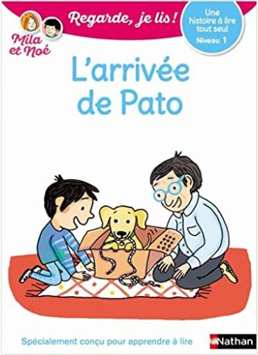

Books
Movies
Albums
Videogames
Games
BD
BD Camille
Blu-ray
Business
Camille
Comics
Cooking
Lego
Manga
Pauline
Photography
Sport
Star Wars
T'choupi
Travel
TV Shows
Un livre dont vous êtes le héro
Vinyl
Walt Disney
5
6
7
8
9
sky doll, tome 1: spaceship collection
alessandro barbucci, barbara canepa
3
sky doll, tome 2 : aqua
alessandro barbucci, barbara canepa
4
sky doll, tome 2 : lacrima christi collection
alessandro barbucci, barbara canepa
3
sky doll, tome 3 : la ville blanche
alessandro barbucci, barbara canepa
4
sky doll, tome 3 : la ville blanche (2b)
alessandro barbucci, barbara canepa
sky doll, tome 4 : sudra
alessandro barbucci, barbara canepa

Regarde, je lis ! tome 14 : L'arrivée de Pato
Eric Battut
Regarde je lis ! 4 histoires de Mila et Noé : vive les vacances !
Éric Battut
Regarde je lis ! BD, tome 3 : Mila et Noé et le parcours aventure
Éric Battut
Regarde, je lis ! tome 1 : Le vélo de Mila
Éric Battut
Regarde, je lis ! tome 5 : La licorne de la cabane
Éric Battut
Regarde, je lis ! tome 7 : La dent perdue
Éric Battut
5
6
7
8
9


 Made with Delicious Library Made with Delicious Library
Made with Delicious Library Made with Delicious Library